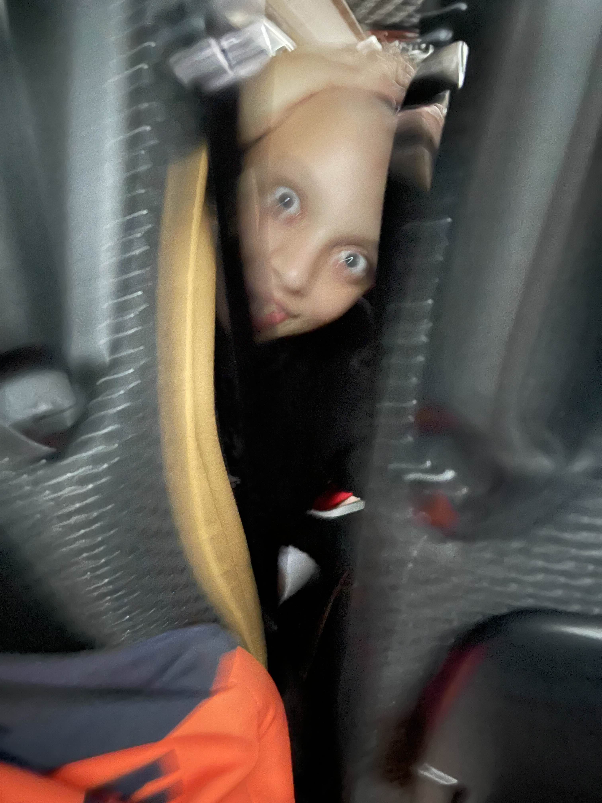
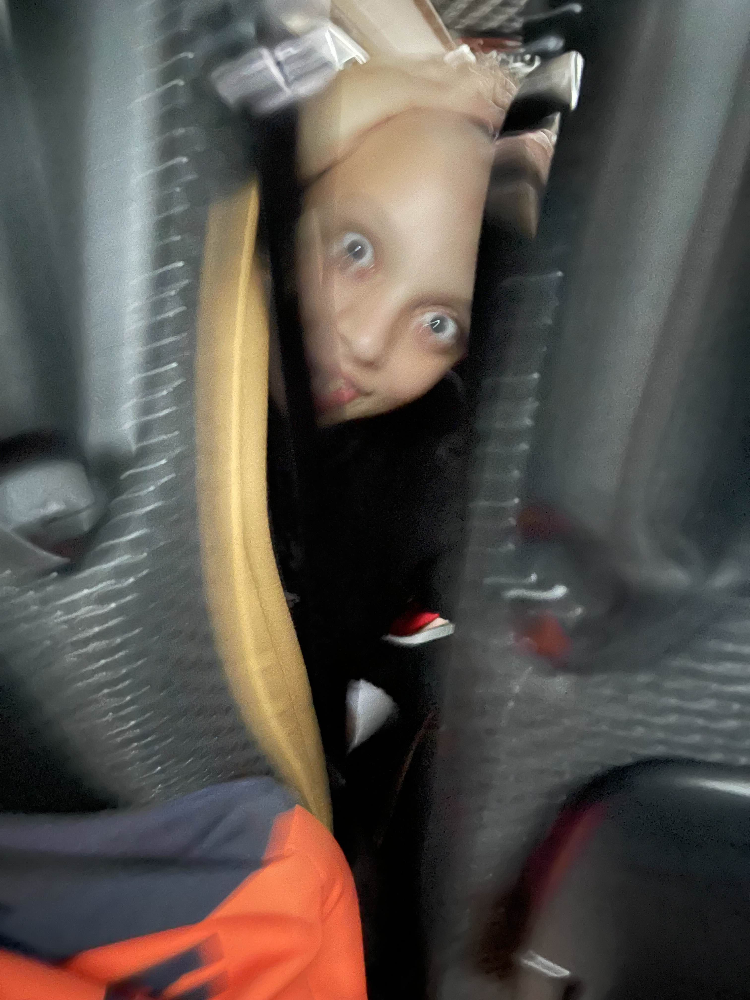

Satul bunicilor mei nu era unul obișnuit. Era un loc unde liniștea serii nu aducea pace, ci o greutate ciudată, ca și cum aerul devenea prea gros pentru a fi respirat. Dar nimic nu era mai neliniștitor decât târnațul lung al casei bătrânești, acolo unde bunica ținea, rânduite pe rafturi de lemn mâncate de carii, zeci de borcane. Toată lumea din sat știa de Denis, deși nimeni nu vorbea despre el decât în șoaptă. Spuneau că e „un copil blestemat”, dar Denis nu mai era de mult un copil. Era un tânăr de vreo 19 ani, cu trupul firav și disproporționat, dar ceea ce te îngheța era capul lui: complet chel, de un alb lutos, fără nicio urmă de sprâncene sau gene. Într-o seară de joi, când ai mei plecaseră la oraș și rămăsesem singur, l-am auzit. Sclonț. Sclonț. Un sunet de sticlă lovită de piatră, venind de afară, de pe târnaț. Mi-am lipit fața de geamul aburit al bucătăriei. Afară, sub lumina palidă a lunii, l-am văzut. Era el. Denis. Stătea ghemuit lângă rafturile cu provizii, mișcându-se cu o agilitate de insectă. Capul lui chel strălucea ca o bilă de biliard sub clarul lunii, reflectând lumina într-un mod nenatural. Nu purta haine, ci doar un soi de cârpă murdară înfășurată în jurul taliei. Căuta ceva cu o disperare mută. Degetele lui lungi și subțiri treceau peste borcanele cu murături, dându-le la o parte cu scârbă. Apoi, mâna i s-a oprit pe un borcan mare, plin cu unsoare de porc, albă și râncedă. L-a desfăcut cu o singură mișcare bruscă. În tăcerea nopții, am auzit sunetul umed al degetelor lui intrând în grăsimea rece. A scos un pumn de unsoare și a început să și-o întindă pe față, pe craniul perfect neted, pe brațe. Dar nu se oprea. Căuta altceva. „Maioneza...” a șoptit el, iar vocea lui a sunat ca un hârşâit de cuțit pe piatră. „Unde e maioneza?” A găsit un borcan de maioneză de casă, uitat de bunica pe colțul târnațului. L-a deschis și, spre groaza mea, a început să verse conținutul gălbui peste capul lui. Amestecul de unsoare și maioneză îi curgea pe umeri, lipindu-i pielea de oase. Atunci, s-a oprit brusc. S-a întors spre geam. Privirea lui... nu o voi uita niciodată. Ochii lui Denis erau uriași, bulbucați, fără pleoape care să clipească. Erau ca două bile de sticlă tulbure în care se reflecta propria mea teroare. Era o privire fixă, goală de umanitate, dar plină de o foame insațiabilă. A început să se apropie de geam, târându-se pe burtă ca o reptilă, lăsând în urmă o dâră lucioasă de grăsime pe scândurile târnațului. Fața lui, mânjită cu maioneză și unsoare, s-a lipit de sticlă. Gura i s-a deschis într-un rânjet larg, lăsând să se vadă gingii negre. „Ești prea uscat, prietene,” a șoptit el, zgâriind cu unghia în geam. „Ai nevoie de puțin... luciu.” Am fugit în cameră și m-am încuiat, tremurând sub pătură până la răsărit. Dimineața, târnațul era gol. Borcanele de unsoare și maioneză erau împrăștiate și linse până la ultimul gram de grăsime. N-am mai ieșit niciodată pe târnaț după apus. Dar uneori, în nopțile foarte reci, încă mai aud sunetul acela: unghia lui Denis zgâriind sticla, căutând ceva care să-i potolească setea de a fi... alunecos.